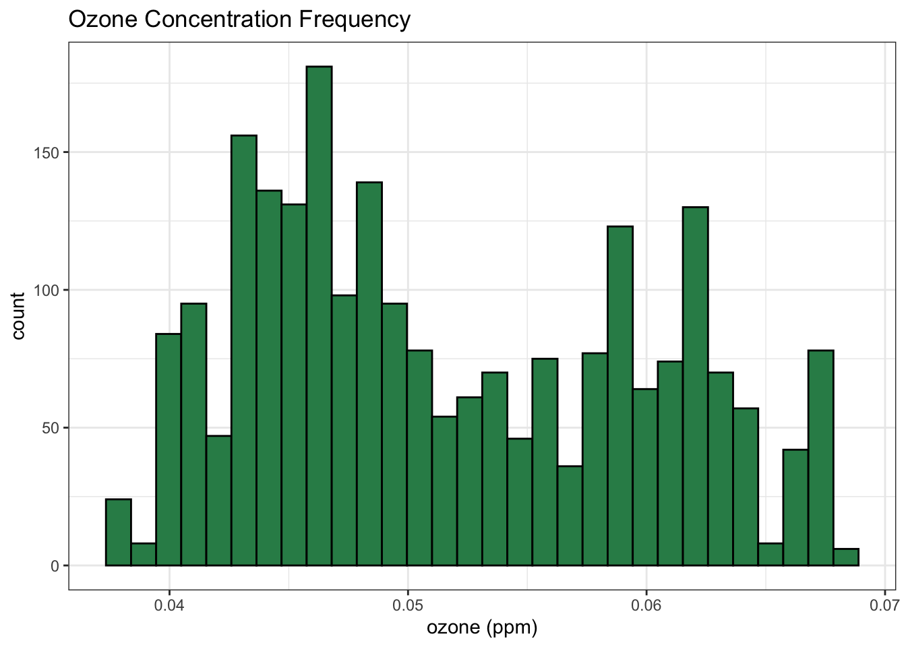
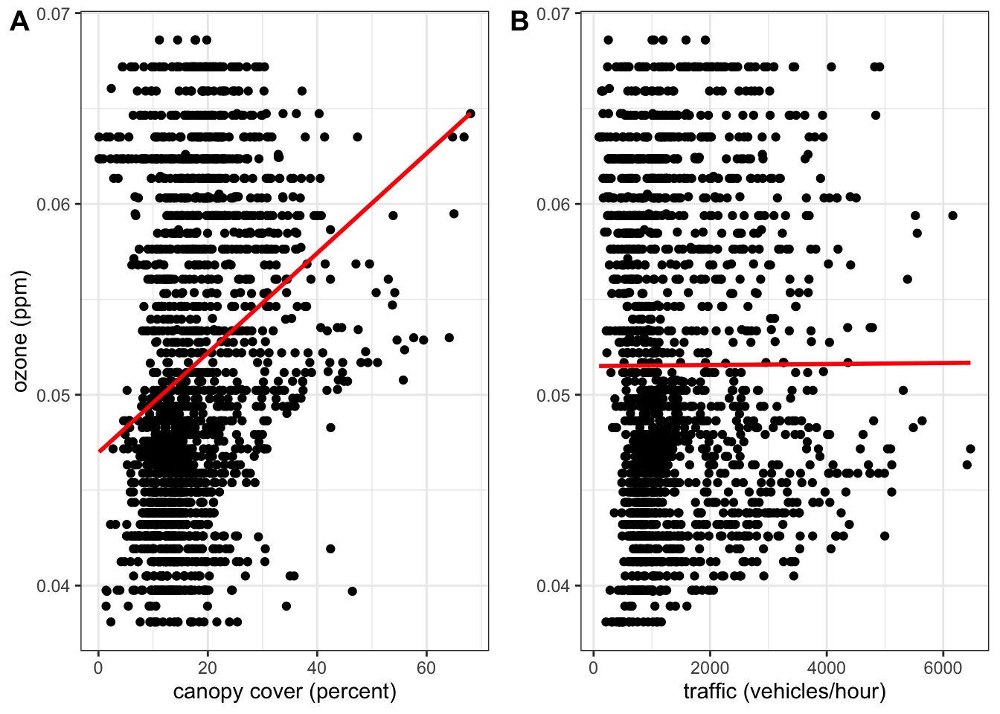
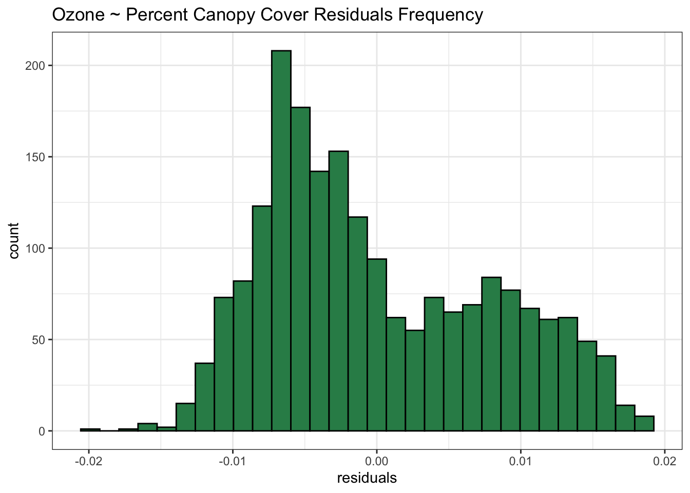
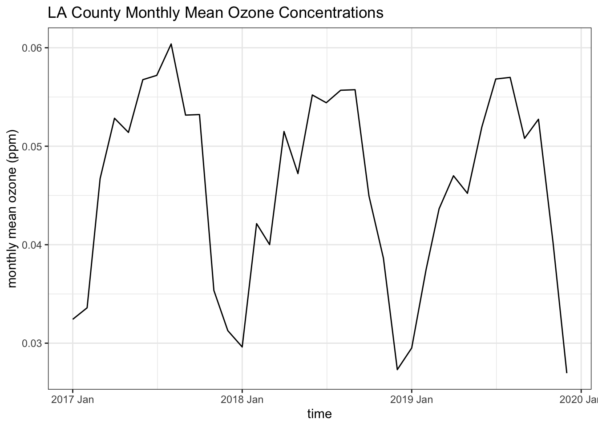
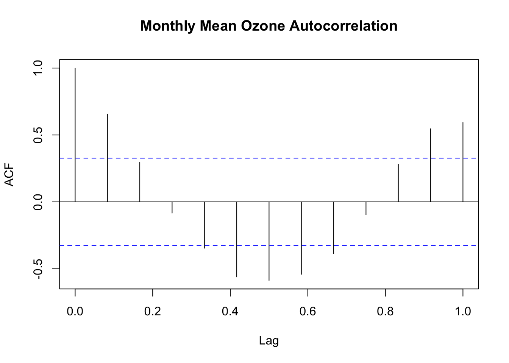

What is the relationship between ozone concentrations and tree canopy cover by census tract in Los Angeles County? How do ozone concentrations vary seasonally?
Significance
Ground-level ozone, a component of smog, is a harmful air pollutant linked to asthma, bronchitis, and other respiratory illnesses. It’s formed mainly in urban areas from vehicle emissions. Gas-powered vehicles emit nitrogen oxides, which react with sunlight to photodissociate into nitrogen and a single oxygen molecule. Oxygen doesn’t like to exist as a single molecule, so it quickly bonds with O2 in the air to to create O3, or ozone1. Without the presence of a stabilizing substance, ozone will continue to photodissociate into O and O2 and come back together like quarrelsome lovers over and over and over again. Trees play an interesting role in this relationship, both contributing to the formation and removal of ozone in the air2. Through the stomata on their leaves, trees filter air pollutants and emit volatile organic compounds (VOCs), which serve to attract pollinators or repel pests. The general rule of thumb is that the more fragrant the tree, the higher the emittance of VOCs. VOCs react with ground-level ozone and prevent further photodissocation, contributing to the formation of smog.
Data
CalEnviroScreen 4.0
Released by the California Office of Environmental Health Hazards Assessment in 2021, CalEnviroScreen 4.0 maps environmental, socieconomic, and health indicators at the census tract level for California. The two variables used in my analysis are ozone, measured in parts per million (ppm), and traffic, measured in vehicles per hour (vehicles/hour). The ozone values are the daily maximum concentrations averaged over May through October from 2017-2019. Traffic volume in each census tract was collected in 2017.
Tree Canopy Cover
This dataset, created by Tree People and the Center for Urban Resilience, lists existing percent canopy cover in each census tract in LA County. The data was created using LiDAR to estimate the proportion of area in each census tract occupied by tree canopy. The data was last updated in 2021 and describes canopy cover for 2016.
US EPA Air Quality System
Using the EPA Air Quality System query, I retrieved daily ozone measurements from 13 monitors in LA County for the years 2017-2019 to conduct my time series analysis. These monitors collect the data used to assign ozone values to census tracts in CalEnviroScreen 4.0.
# read in tree canopy percentage by census tracttree_canopy <-read_csv(here("posts", "2023-12-14-eds222-final", "data", "2016 Tree Canopy Cover Calculations_a.csv"))# read in CalEnviroScreen 4.0enviroscreen <-st_read(here("posts", "2023-12-14-eds222-final", "data", "calenviroscreen40shpf2021shp", "CES4 Final Shapefile.shp"), quiet =TRUE) %>%filter(County =="Los Angeles")# select variables of interestenviroscreen <- enviroscreen %>%select(Tract, Ozone, OzoneP, Traffic, TrafficP, Shape_Leng, Shape_Area, geometry) %>%mutate(Traffic =na_if(Traffic, -999))# make column names lowercasenames(enviroscreen) <-tolower(names(enviroscreen))# merge the two dataframestracts_trees <-merge(enviroscreen, tree_canopy, by.x ="tract", by.y ="geoid20")
Linear Regression
Preliminary Data Analysis, Preparation, and Visualization
To prepare my data for linear regression, I first merged my CalEnviroScreen 4.0 and tree canopy cover datasets by census tract ID. During the merge, we lose around 350 census tracts due to mismatched IDs. IDs may have been updated between the different temporal ranges of our datasets. We’re still left with measurements for ozone, traffic volume, and percent tree canopy cover in 2,016 census tracts, which is a large enough sample to conduct our linear regression.
Next, I explored my data to see if it meets the assumptions to conduct Ordinary Least Squares regression. Plotting the distribution of my dependent variable, we can see that ozone is not distributed normally, but bimodally. Since there’s no major skew, we can’t easily transform our data logarithmically.
Code
# plot histogram to show distribution of ozone concentrations in census tractsggplot(enviroscreen) +geom_histogram(aes(x = ozone),bins =30,color ="black",fill ="seagreen") +labs(x ="ozone (ppm)",y ="count",title ="Ozone Concentration Frequency") +theme_bw()

Figure 1: Histogram of ozone concentrations in LA County census tracts
Then, I plotted two scatterplots of my independent variables, traffic volume and percent tree canopy cover, against ozone concentrations.
Code
# plot percent canopy cover against ozonetrees_scatter <- tracts_trees %>%ggplot(aes(x = existing_canopy_pct, y = ozone)) +geom_point() +geom_smooth(method ="lm",color ="red",formula = y ~ x,se =FALSE) +labs(x ="canopy cover (percent)",y ="ozone (ppm)") +theme_bw()# plot traffic volume against ozonetraffic_scatter <- tracts_trees %>%ggplot(aes(x = traffic, y = ozone)) +geom_point() +geom_smooth(method ="lm",color ="red",formula = y ~ x,se =FALSE) +labs(x ="traffic (vehicles/hour)",y ="") +theme_bw()# arrange the plots side-by-sideplot_grid(trees_scatter, traffic_scatter, labels ="AUTO")

Figure 2: Percent tree canopy cover (A) and traffic volume (B) plotted against ozone concentrations in census tracts in LA County. Regression line plotted to show correlation
By plotting a correlation line using geom_smooth() in our ggplot code, we notice a positive correlation between percent canopy cover and ozone concentrations, but no correlation between traffic volume and ozone.
Before running our regression model, let’s test for multicollinearity between our independent variables.
Code
# find correlation between traffic volume and percent tree canopy coverprint(paste("r:", round(cor(tracts_trees$traffic, tracts_trees$existing_canopy_pct, use ="na.or.complete"), digits =3)))
[1] "r: -0.04"
There is almost no correlation between our independent variables, so let’s add them to our model and conduct a multiple linear regression, predicting ozone concentrations with percent tree canopy cover and traffic volume.
Multiple Linear Regression
Code
# multiple linear regression, predicting ozone with percent tree canopy cover and traffic volumetrees_traffic_mod <-lm(ozone ~ existing_canopy_pct + traffic, data = tracts_trees)# output our regression resultsstargazer(trees_traffic_mod,type ="html",title ="ozone ~ percent canopy cover + traffic volume",align =TRUE,covariate.labels =c("canopy cover (%)", "traffic volume (vehicles/hour)"),omit.stat =c("F", "ser", "aic"),single.row =TRUE)
ozone ~ percent canopy cover + traffic volume
Dependent variable:
ozone
canopy cover (%)
0.0003*** (0.00002)
traffic volume (vehicles/hour)
0.00000 (0.00000)
Constant
0.047*** (0.0005)
Observations
2,010
R2
0.078
Adjusted R2
0.077
Note:
p<0.1; p<0.05; p<0.01
Table 1: Multiple linear regression predicting ozone concentrations in census tracts with percent canopy cover and traffic volume. Output formatted with stargazer
At first glance, we can see that the asterisks next to canopy cover indicate that canopy cover and ozone have a statistically significant relationship at a significance level of .01, but there is no statistically significant relationship between traffic volume and ozone. Let’s take traffic volume out of our model and run a simple linear regression.
Simple Linear Regression
Code
# simple linear regression, predicting ozone concentrations with percent tree canopy covertrees_ozone_mod <-lm(ozone ~ existing_canopy_pct, data = tracts_trees)# output our regression resultsstargazer(trees_ozone_mod,type ="html",title ="ozone ~ percent canopy cover",align =TRUE,covariate.labels =c("canopy cover (%)"),omit.stat =c("F", "ser", "aic"),single.row =TRUE)
ozone ~ percent canopy cover
Dependent variable:
ozone
canopy cover (%)
0.0003*** (0.00002)
Constant
0.047*** (0.0004)
Observations
2,016
R2
0.075
Adjusted R2
0.075
Note:
p<0.1; p<0.05; p<0.01
Table 2: Simple linear regression predicting ozone concentrations in census tracts with percent canopy cover. Output formatted with stargazer
Our intercept means that for census tracts with 0% canopy cover, we expect to see ozone concentrations of .047 ppm. Our canopy cover coefficient means that for each 1 percentage point increase in canopy cover, we would expect to see a census tract’s ozone concentration increase by .0003 ppm. Our R2 value means that around 7.5% of the variation in ozone in census tracts in LA County can be explained by percent tree canopy cover alone.
Even though there’s a statistically significant relationship between ozone and percent tree canopy cover, our model seems to tell us that tree canopy cover doesn’t drive ozone all that much. Let’s plot the residuals of our model to see if they are normally distributed.
Code
# save regression to our modelpredictions <- tracts_trees %>%add_predictions(trees_ozone_mod) %>%mutate(residuals = ozone - pred)# plot our residuals to see if they are normally distributedggplot(predictions,aes(x = residuals)) +geom_histogram(color ="black",fill ="seagreen",bins =30) +theme_bw() +labs(title ="Ozone ~ Percent Canopy Cover Residuals Frequency")

Figure 3: Histogram of simple linear regression residuals
We can see that our residuals are not normally distributed, but follow a bimodal distribution. This means that our model may be suffering from omitted variable bias. Prior research2 tells us that there are other factors that drive ozone, such as sunlight and temperature.
Time Series Analysis
Preliminary Data Analysis, Preparation, and Visualization
Recall that the ozone variable in CalEnviroScreen 4.0 is the maximum daily concentration averaged over May-October for the years 2017-2019. Digging into the metadata for the dataset, the underlying assumption is that ozone concentrations are higher during the summer months. By retrieving the US EPA Air Quality System daily ozone monitoring data for the entire three-year span, we can assess the seasonality of ozone.
The US EPA AQS data is downloaded as three separate .csv files for 2017, 2018, and 2019. Since the dataframes share identical column names, we can simply stack them together in one dataframe using rbind().
Code
## read in our time-series ozone data# LA ozone 2017la_ozone_2017 <-read_csv(here("posts", "2023-12-14-eds222-final", "data", "la_ozone_2017.csv")) %>%rename(ozone ="Daily Max 8-hour Ozone Concentration")# LA ozone 2018la_ozone_2018 <-read_csv(here("posts", "2023-12-14-eds222-final", "data", "la_ozone_2018.csv")) %>%rename(ozone ="Daily Max 8-hour Ozone Concentration")# LA ozone 2019la_ozone_2019 <-read_csv(here("posts", "2023-12-14-eds222-final", "data", "la_ozone_2019.csv")) %>%rename(ozone ="Daily Max 8-hour Ozone Concentration")# rbind our CSVs togetherozone_3yr <-rbind(la_ozone_2017, la_ozone_2018, la_ozone_2019)
Using the lubridate package, we can turn our date column into a datetime object. This will allow us to group our observations by month and take the monthly mean from January 2017-December 2019. Let’s make a simple time series plot of monthly mean ozone to see evidence of a seasonal component.
Code
# clean up column namesnames(ozone_3yr) <-names(ozone_3yr) %>%tolower() %>%str_replace_all(" ", "_")# replace slashes with hyphensozone_3yr$date <- ozone_3yr$date %>%str_replace_all("/", "-")# convert to a datetime objectozone_3yr$date <-as_datetime(ozone_3yr$date, format ="%m-%d-%Y") # parse the month and the yearozone_3yr <- ozone_3yr %>%mutate(month =month(date, label =TRUE),year =year(date)) %>%mutate(mo_yr =yearmonth(date))# find the mean for each monthmonthly_mean <- ozone_3yr %>%group_by(mo_yr) %>%summarize(daily_ozone_mean =mean(ozone, na.rm =TRUE)) %>%as_tsibble(index = mo_yr)# plot the monthly dataggplot(monthly_mean,aes(x = mo_yr, y = daily_ozone_mean)) +geom_line() +theme_bw() +labs(x ="time",y ="monthly mean ozone (ppm)",title ="LA County Monthly Mean Ozone Concentrations")

Figure 4: Time series of monthly mean ozone (ppm) from January 2017-December 2019
Our time series plot shows evidence of seasonality, with mean monthly ozone concentrations peaking during summer and dropping during winter. Assuming our seasonality occurs during a one-year period, we can plot an autocorrelation function with 12 lags to look at the strength of this seasonality.
Code
# plot an autocorrelation function of monthly mean ozone with 12 lagsacf(monthly_mean, lag.max =12,main ="Monthly Mean Ozone Autocorrelation")

Figure 5: Autocorrelation of monthly mean ozone in LA County from 2017-2019
Our autocorrelation plot describes how correlated monthly mean ozone values at any given month are with previous months. Each line represents the autocorrelation between month \(t\) and month \(t-i\). We can see that there is a statistically significant, positive correlation between month \(t\) and months \(t-2\), \(t-11\), and \(t-12\). There is a statistically significant, negative correlation between month \(t\) and months \(t-5\), \(t-6\), \(t-7\), and \(t-8\). Intuitively, this checks out. If ozone concentrations are higher in the summer and lower in the winter, we expect monthly mean ozone values to be positively correlated with the months around them, and negatively correlated with months around 6 months away.
Discussion
Based on the results of our regression analysis, we can assume that the relationship between ozone and tree canopy cover is more complex than what we’ve modeled. Further analysis might involve finding temperature and sunlight measurements for census tracts in LA County over the same temporal range as our ozone variable and adding them as independent variables in another multiple linear regression. Additionally, volatile organic compounds are not only emitted by trees, but by paint or even cooking.
I believe an interesting but much more complex analysis would also track the seasonal variability of canopy cover. Trees emit VOCs through their leaves, but LA County has many deciduous trees that drop their leaves during winter. Although temperature and sunlight being lower in the winter likely drive the seasonality of ozone, could tree phenology also play a role?
Fitsky, Anne Charlott, Hans Sanden, Thomas Karl, et al. “The Interplay Between Ozone and Urban Vegetation-BVOC Emissions, Ozone Deposition, and Tree Ecophysiology”. *Frontiers in Forests and Global Change, vol. 2 (2019): https://doi.org/10.3389/ffgc.2019.00050
Lastly - If you would like to read some rambling ruminations about forestry, check out my first blog post, written during my time as a GrizzlyCorps Fellow in Trinity County, California.